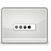
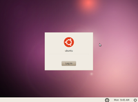
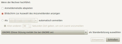
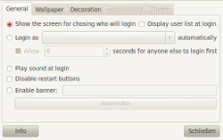

GDM2
Archivierte Anleitung
Dieser Artikel wurde archiviert, da er - oder Teile daraus - nur noch unter einer älteren Ubuntu-Version nutzbar ist. Diese Anleitung wird vom Wiki-Team weder auf Richtigkeit überprüft noch anderweitig gepflegt. Zusätzlich wurde der Artikel für weitere Änderungen gesperrt.
Anmerkung: Dieser Artikel bezieht sich noch auf eine ältere Version von GDM und kann daher nicht auf das aktuelle Ubuntu GNOME übertragen werden. Die aktuelle Fassung des Artikels findet man im Wiki unter GDM.
Zum Verständnis dieses Artikels sind folgende Seiten hilfreich:
Aktivieren eines PPAs, optional
Ein einzelnes Paket installieren, optional
Installation von Programmen, optional
Einen Editor benutzen, optional
Root-Rechte, optional

GDM  (kurz für GNOME Display Manager) kümmert sich bei Ubuntu und Xubuntu um die grafische Anmeldung von Benutzern am System ("login"). Ein Displaymanager erlaubt ferner, (bei Bedarf) unterschiedliche Desktop-Umgebungen zu starten oder auch entfernte Rechner über ein Netzwerk auszuwählen.
(kurz für GNOME Display Manager) kümmert sich bei Ubuntu und Xubuntu um die grafische Anmeldung von Benutzern am System ("login"). Ein Displaymanager erlaubt ferner, (bei Bedarf) unterschiedliche Desktop-Umgebungen zu starten oder auch entfernte Rechner über ein Netzwerk auszuwählen.
Ab Ubuntu 9.10 kommt eine komplett neu geschriebene Version (2.21 bis 2.32; umgangssprachlich auch als GDM2 bezeichnet) zum Einsatz. Eine Beschreibung der älteren Version 2.20, die einen größeren Funktionsumfang besitzt und sich in einigen zentralen Punkten unterschiedlich verhält, ist im Archiv zu finden.
Die jüngste Version des GDM (3.x) findet in GNOME 3 Verwendung. Diese wird ab Ubuntu 11.10 nicht mehr eingesetzt, stattdessen kommt die Neuentwicklung LightDM zum Einsatz. GDM ist aber weiterhin in den Paketquellen enthalten.
|  |
| Ubuntu 10.04 |
Persönliche Einstellungen¶
Der Benutzer kann vor der Anmeldung festlegen, welche:
Sprache
Tastaturbelegung
Sitzung (meist eine Desktop-Umgebung; ein Standard ist voreingestellt)
verwendet werden soll. So kann der eine Benutzer GNOME starten lassen und ein anderer KDE usw. Voraussetzung ist natürlich, dass verschiedene Desktop-Umgebungen installiert sind. Nachdem ein Benutzer ausgewählt wurde, kann am unteren Bildschirmrand unter "Sprache", "Tastatur" und "Sitzungen" die entsprechende ausgewählt werden.
Hinweis:
Es können nur die Sprachen ausgewählt werden, die bereits installiert sind. Möchte man eine nicht angebotene Sprache auswählen können, so müssen zuerst zusätzliche Sprachpakete installiert werden.
Konfiguration¶
Allgemein¶
|  |
| Optionen |
Die im Gegensatz zu Vorgängerversionen stark reduzierten "offiziellen" Einstellungsmöglichkeiten finden sich im Menü unter "System -> Systemverwaltung -> Anmeldebildschirm" (siehe Abbildung). Verändert werden können:
akustische Rückmeldung (Ton aus)
automatische Anmeldung eines Benutzers
die zu startende Sitzung (Desktop-Umgebung)
Achtung!
Wer ein verschlüsseltes Benutzerverzeichnis verwendet, sollte auf eine automatische Anmeldung verzichten, weil dadurch der Aspekt der Daten-Sicherheit unterlaufen und die Funktionsweise erheblich beeinträchtigt wird.
Weitere Einstellungen¶
GDM verhält sich nun – im Gegensatz zu älteren Versionen – wie eine normale Benutzersitzung, die aber unter dem Benutzernamen gdm läuft. Daher öffnet man nach der Anmeldung als Benutzer ein Terminalfenster [1] und gibt folgenden Befehl ein:
sudo cp /usr/share/applications/gnome-appearance-properties.desktop /usr/share/gdm/autostart/LoginWindow
Dann direkt wieder abmelden. Nun öffnet sich der Dialog zur Anpassung des Erscheinungsbildes direkt vor der Anmeldung. Ab jetzt können sämtliche Konfigurationen in Echtzeit vorgenommen werden. Wenn alles nach den eigenen Wünschen eingerichtet ist, kann der Dialog geschlossen und sich angemeldet werden.
Nach der Anmeldung sollte man mit:
sudo unlink /usr/share/gdm/autostart/LoginWindow/gnome-appearance-properties.desktop
die Anzeige des Einstellungsdialogs wieder abschalten.
Hinweis:
Der oben beschriebene Weg wird für Ubuntu 11.04 empfohlen. Unter älteren Ubuntu-Versionen kann man auch die nachfolgenden Alternativen nutzen.
Die gleiche Wirkung, aber ohne eine optische Kontrolle, hat der D-Bus-Befehl:
gksudo -u gdm dbus-launch gnome-appearance-properties
Dafür braucht man sich hier nicht ab- und neu anmelden.
Konfigurations-Editor¶
Nur Fortgeschrittene sollten alternativ mit dem Befehl:
gksudo -u gdm dbus-launch gconf-editor
den Konfigurations-Editor öffnen. Nun navigiert man zum Schlüssel "apps -> gdm" und stellt weitere Optionen wie gewünscht ein. Englisch-Kenntnisse sind hier von Vorteil.
GDM2 Setup¶

Nur unter Ubuntu 10.04 kann das Werkzeug GDM2 Setup eingesetzt werden, mit dem das Erscheinungsbild des Anmeldebildschirmes ebenfalls geändert wird. Die Programmoberfläche ist zwar auch in Englisch, aber viel zugänglicher als der Konfigurations-Editor. Das Programm ist kein Bestandteil der offiziellen Paketquellen und muss daher über ein "Personal Packages Archiv" (PPA) [2] (oder als einzelnes Fremdpaket [3]) installiert werden.
Adresszeile zum Hinzufügen des PPAs:
ppa:gdm2setup/gdm2setup
Hinweis!
Zusätzliche Fremdquellen können das System gefährden.
Ein PPA unterstützt nicht zwangsläufig alle Ubuntu-Versionen. Weitere Informationen sind der  PPA-Beschreibung des Eigentümers/Teams gdm2setup zu entnehmen.
PPA-Beschreibung des Eigentümers/Teams gdm2setup zu entnehmen.
Damit Pakete aus dem PPA genutzt werden können, müssen die Paketquellen neu eingelesen werden.
Nach dem Aktualisieren der Paketquellen kann das folgende Paket installiert [4] werden:
python-gdm2setup (ppa)
 mit apturl
mit apturl
Paketliste zum Kopieren:
sudo apt-get install python-gdm2setup
sudo aptitude install python-gdm2setup
Anschließend wird das Programm über "System -> Systemverwaltung -> Login Screen (GDM2Setup)" aufgerufen. Die Benutzerliste und das Autologin sind nicht gleichzeitig aktivierbar.
Bild als Benutzerfoto auswählen¶
Ein Benutzer kann innerhalb von GNOME über das Menü
"System -> Einstellungen -> Persönliche Angaben"
das eigene Benutzer"foto" (eher ein Symbol) bequem ändern. Die auf dem System bereits vorhandenen Symbole sind unter /usr/share/pixmaps/faces zu finden. Wer will, kann die gewünschte Bilddatei auch als ~/.face im Homeverzeichnis ablegen.
Dieses Bild wird dann automatisch nach /var/cache/gdm/BENUTZERNAME/face kopiert und ist sofern die Lese/Schreibrechte richtig gesetzt sind bei der nächsten Anmeldung für alle sichtbar. Sollte das Benutzerbild bei der Anmeldung nicht erscheinen, oder sich das Bild nicht mehr ändern lassen, so sollte man die Lese/Schreibrechte des Benutzerfotos im Cache von GDM prüfen
Benutzer(liste) ausblenden¶
Soll im Anmeldebildschirm keine Benutzerliste angezeigt werden, so kann man dies über folgenden Befehl einstellen:
sudo -u gdm gconftool-2 --set --type bool /apps/gdm/simple-greeter/disable_user_list true
Danach werden keine bekannten Benutzernamen mehr aufgelistet. Man muss nun sowohl den Benutzernamen als auch das Passwort kennen. Rückgängig macht man das Ganze, indem man am Ende anstelle von true den Wert false angibt.
Möchte man nur einzelne Benutzer ausblenden, z. B. johnny, so kann man die Datei /etc/gdm/custom.conf mit dem Abschnitt
[greeter] Exclude=johnny
versehen. nobody muss ggfs. auch aufgenommen werden, wenn er im Anmeldebildschirm angezeigt wird. Danach muss GDM neu gestartet werden (Achtung: alle Programme werden geschlossen, also vorher alles speichern!):
sudo restart gdm
Designs¶
Die früher sehr beliebte Installation von Designs wird nicht mehr unterstützt! Das einzige, was sich noch (einzeln) anpassen lässt, sind (siehe oben):
Hintergrundbild
GTK-Design (siehe GTK Engines)
Symboldesign
Experten-Info:
Um das Aussehen des GDM grundlegend zu ändern, müssen die .ui-Dateien im Ordner /usr/share/gdm/ geändert werden.
Hintergrundbild ändern¶
Das neue Hintergrundbild muss sich im Ordner /usr/share/backgrounds befinden:
sudo cp mein_neuer_GDM_Hintergrund.jpg /usr/share/backgrounds
Das Kopieren der Bilddatei funktioniert auch grafisch. Dazu ruft man Nautilus mit Root-Rechten auf:
gksudo nautilus
Nun navigiert man zu dem gewünschten Bild und kopiert es in den Ordner /usr/share/backgrounds. Dort muss man nun noch die Eigenschaften der Datei mit  -Klick aufrufen und unter "Zugriffsrechte" für "Alle" "nur lesen" einstellen.
-Klick aufrufen und unter "Zugriffsrechte" für "Alle" "nur lesen" einstellen.
Aktiviert wird der neue Hintergrund mit folgendem Befehl:
sudo -u gdm gconftool-2 --type string --set /desktop/gnome/background/picture_filename /usr/share/backgrounds/mein_neuer_GDM_Hintergrund.jpg
Tipps¶
Beenden und (Neu-)Starten von GDM samt XServer¶
Manchmal kommt es vor, dass man bestimmte Aufgaben ohne laufenden XServer bzw. auf der Konsole durchführen möchte. Mit den Tastenkombinationen Tasten Strg + Alt + F1 bis Strg + Alt + F6 kann man in sechs unabhängige Textkonsolen wechseln. Befindet man sich erstmal auf einer Textkonsole, reicht beispielsweise Alt + F2 , um zur zweiten Textkonsole zu wechseln. Zurück zur laufenden Sitzung / graphischen Anmeldung gelangt man mit Alt + F7 .
Von einer Textkonsole aus kann man GDM mitsamt Xserver wie folgt beenden, starten oder neu starten.
| Aktion | Befehl |
| Beenden | sudo stop gdm |
| Starten | sudo start gdm |
| Neustarten | sudo restart gdm |
Sitzungen im GDM-Menü¶
In seltenen Fällen, z.B. beim Einsatz eines reinen Fenstermanagers, muss eine neue Sitzung manuell zu GDM hinzugefügt werden. Das generelle Vorgehen ist im Artikel Displaymanager erläutert.
Mehrere GDM-Instanzen¶
Bei älteren Versionen von GDM konnten mittels Xnest und Xephyr mehrere Anmeldefenster (auf virtuellen Konsolen) gleichzeitig laufen. Diese Funktionalität ist nicht mehr vorhanden.
Ausführen bei Abmeldung¶
In der Datei /etc/gdm/PostSession/Default können Befehle eingetragen werden, die bei der Abmeldung erledigt werden sollen. Allerdings sollte man beachten, dass diese Befehle mit Root-Rechten ausgeführt werden.
Entfernter Login¶
Besitzt man mehrere Linux-Rechner in einem LAN, so ist es möglich, sich über das Netzwerkprotokoll XDMCP auf einem entfernten Linux-Rechner anzumelden. Allerdings ist hierbei zu beachten, dass die Kommunikation über XDMCP unverschlüsselt stattfindet. Es sollte daher ausschließlich innerhalb eines LANs verwendet werden und nicht über das Internet. Aus diesen Gründen ist auch der "entfernte Login" von Haus aus nicht aktiviert.
Um ihn zu aktivieren, bearbeitet man die Datei /etc/gdm/custom.conf mit Root-Rechten und fügt folgendes ein:
[xdmcp] Enable=true
Danach ist der GDM neu zu starten. Die entsprechende Option ist nun unter "Sitzung" zu finden. Wer die entfernte Anmeldung verschlüsseln bzw. tunneln möchte, findet die entsprechende Anleitung unter SSH.
GDM ausschalten¶
Wer keine grafische Anmeldung benötigt, kann GDM auch abschalten. Dazu editiert [5] man die Datei /etc/default/grub mit Root-Rechten [6] und ändert die Zeile:
GRUB_CMDLINE_LINUX_DEFAULT="quiet plymouth"
in
GRUB_CMDLINE_LINUX_DEFAULT="text"
Diese Änderung kann entweder temporär als Bootoption erfolgen, oder dauerhaft aktiviert werden – siehe GRUB 2/Konfiguration.
Problembehebung¶
Endlosschleife beim Anmelden¶
Es kommt vor, dass sich Benutzer beim Anmelden in einer Endlosschleife wiederfinden. Nach der Eingabe des Passwortes und dessen Bestätigung verschwindet der GDM-Anmeldebildschirm, und der Bildschirm wird schwarz. Kurz darauf lädt der GDM-Loginscreen erneut. Das ist beliebig oft wiederholbar.
Die einfache Lösung: durch zu wenig freien Speicherplatz im System ist es nicht mehr möglich, einen temp-Ordner zu erstellen und zu beschreiben. Durch Freigeben von Speicherplatz (beispielsweise Löschen einiger Dateien, Dateisystemvergrößerung oder Auslagerung von Dateien) wird das Problem behoben. Danach ist eine grafische Anmeldung wieder möglich.
Wichtig ist auch, dass der Benutzer gdm und der aktuelle Benutzer Schreib- und Leserechte für den Ordner /tmp/ besitzen.
Kein Herunterfahren im Abmeldedialog¶
Es kommt vor, dass Benutzer im Abmeldedialog von GNOME die Option zum Herunterfahren des Rechners nicht mehr finden. Dies kommt daher, dass beispielsweise mit der Installation eines Metapaketes wie kubuntu-desktop auch ein anderer Displaymanager wie KDM installiert wird.
Damit diese Option wieder erscheint, muss man GDM als "Display Manager" benutzen. Dies erledigt man über den Befehl [2]:
sudo dpkg-reconfigure gdm
Links¶
GDM Referenzhandbuch
 - für die Versionen 2.32 und 3.0
- für die Versionen 2.32 und 3.0
GDM2Setup
auf ubuntuforums.orgLogin-Maske auf dem falschen Bildschirm
- beim Einsatz mehrerer Monitore. Blogbeitrag (inkl. Reparaturhinweis) 05/2011PPA mit der älteren Version 2.20 für Ubuntu 10.04
- Erstellt mit Inyoka
-
 2004 – 2017 ubuntuusers.de • Einige Rechte vorbehalten
2004 – 2017 ubuntuusers.de • Einige Rechte vorbehalten
Lizenz • Kontakt • Datenschutz • Impressum • Serverstatus -
Serverhousing gespendet von